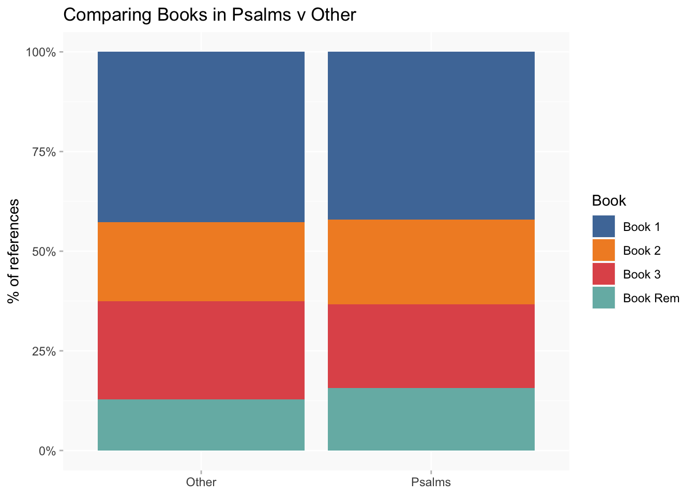
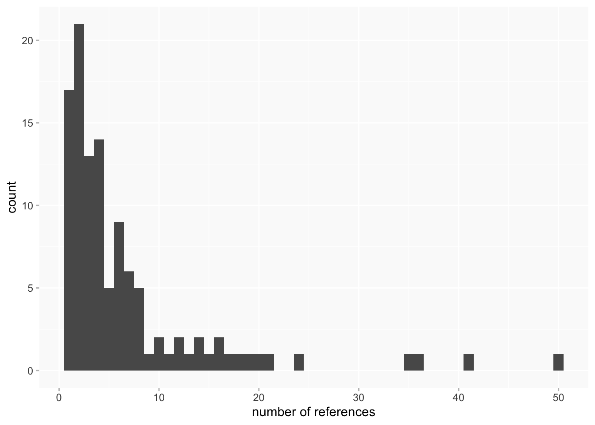
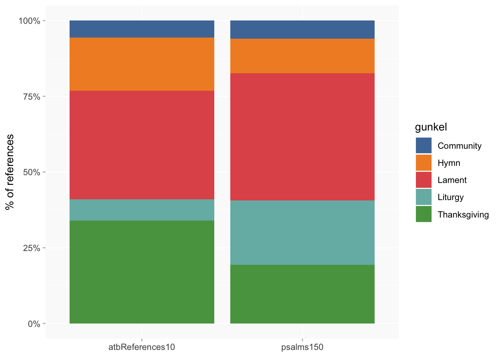

Psalms
Overview
As with more general posts - where are the psalms quotes, are there interesting differences between books?
[counting individual references (in @source) so numbers will differ from where I've counted <quote> tags]
Already noted that Psalms represents the most frequently referenced book (by some margin); 748 of 2769 (27%) individual references are Psalms - the next two are what I termed “Liturgy” (all the non-psalter parts of BCP; I think includes non-psalter Psalms, though there aren’t many) at 235 and the Book of Matthew at 187.
This figure combines the OT Book of Psalms and the BCP Psalter: 467 references don’t have a specified source, 130 are referenced as BCP, KJV 106 and GB/BB combined 45. Given the number of non-specific references I’m not sure if it’s worth trying to do a comparison of Bible v BCP.
compare Books
As usual there are a lot more in Book 1 than the others, but only because it’s much bigger than the rest.
Comparing Psalms v “Other” references in each book as a % of references, there is very little variation between Books.

locating Psalms
A heatmap/barcode chart of page locations of psalms references
This includes Other (on pages where there are no Psalms references at all) in a slightly darker grey; it’s not a perfect way to try to do that comparison and I could dig down into it a bit differently but I’m doubtful whether it’d show any important differences in reference patterns. (Eg in Book 3 the yellow cluster for Psalms is in the same area of the book as the cluster for overall references in my earlier post.)
Individual Psalms
In total 112 Psalms of the 150 are referenced at least once. The majority of these have a very small number of references (to add full table at bottom).
- 21 mentioned 10 times or more
- 91 mentioned less than 10 times (65 < 5)
- 17 are only mentioned once

Also:
- 24 Psalms are mentioned in all four Books; 27 in only one.
top Psalms
The top five Psalms overall are no. 103 (50 references), 107 (41), 116 (36), 27 (35) and 119 (24).
comparison of Books
An experiment in looking more closely at comparisons/patterns for the Psalms that are quoted often.
This is a heatmap of rankings (simpler than frequencies or proportions)
- top 6 are coloured from bright yellow=1 to dark blue
- psalms ranked outside the top 6 are grey
- white means the psalm isn’t mentioned at all in that book
- actual ranking in white text for reference
[top 6 is not an elaborately calculated thing but you start to get a lot of ties in rankings lower than this; rankings below 10 likely to represent only one or two mentions]
read across each row to compare rankings: eg psalm 103 is ranked 2 in Bk 1, 1 in Bk 2, 6 in Bk 3, and 1 in Rem.
For readability this is restricted to psalms that are mentioned in more than one book and have a top 6 ranking in at least one book
a handful of psalms are ranked 6 or better in at least three books
- psalm 103 (1st overall)
- psalm 107 (2nd)
- psalm 116 (3rd)
- psalm 27 (4th)
- psalm 25 (7th)
These mostly match their overall rankings. Less consistent cases might be interesting?
- 119 and 69 were in the top 6 overall but are less evenly distributed, especially 69 which isn’t in book 2 at all.
- 136 is 8th overall but not in Rem at all and outside the top 10 in Book 1
Conversely, are there high(ish)-ranked Psalms that only appear in one Book?
Most single-Book psalms are in Book 1, reflecting its size again. Most single-Book psalms are very low ranked (all are outside the top 20 overall and top 6 by book), but a handful scrape into the top 8 by Book, eg psalm 89 in Book 1 is ranked 8 (6 mentions) and psalm 47 in Book 2 ranked 7. Cases like these could be worth a closer look in context to see if there’s anything interesting about them?

A slightly different view of popularity: only the psalms that are referenced in all four books, but not otherwise constrained, so we get a few that didn’t appear in the first heatmap because their average ranking is fairly low. Nonetheless, the fact of making it into all four Books might be of interest.
Categories
I don’t know if there are any categorisation schemes you would use - we may need to talk about this.
I’m trying out a couple of things here: the division into five books in the Psalter; and what seems to be a commonly used classification scheme by Hermann Gunkel. I’ve seen others, but I don’t know what’s actually useful for our purposes.
So these are just test runs; I can easily enough repeat and extend analysis with any classification scheme.
Gunkel categories
Some Psalms are in more than one Gunkel category; to simplify things for the moment, I pick just one (at random).
The categories aren’t evenly distributed in the psalms overall, which needs to be taken into account.
Comparing psalms ATB used at least once with the overall frequency (ie, counting each Psalm only once) there are slight differences, but they aren’t significant.
However, counting individual references shows a much clearer (and statistically significant) expansion of the Thanksgiving category and reduced Liturgy compared to the reference.
This pattern is even more marked when analysis is restricted to the Psalms with at least 10 references in atb; the Hymn group is also somewhat bigger.

The top Psalms again with their categories
Psalter Book groups
Turning to the Psalter book groups, which are also not evenly distributed (list pulled from wikipedia):
- Book 1 - Psalms 1–41
- Book 2 - Psalms 42–72
- Book 3 - Psalms 73–89
- Book 4 - Psalms 90–106
- Book 5 - Psalms 107–150
(I’ll use the label “Group” rather than “Book” to avoid confusion with AT Books.)
psalm distribution in ATB is almost identical to the groups.
this time, counting individual references makes very little difference (which I find actually quite odd!)
And again for 10+ references, slightly pro group 5 and against group 2 but minor differences.
Top psalms again.
comparison of Books
In the gunkel categories, Book 2 looks a bit different from the others; I’d say the variations between the other three Books aren’t significant.
In Psalter groups, Book 2 is a bit different again; Book 3 looks a bit different too.
I’ll leave this here and can follow up once we’ve had a chance to discuss possible categorisation schemes.